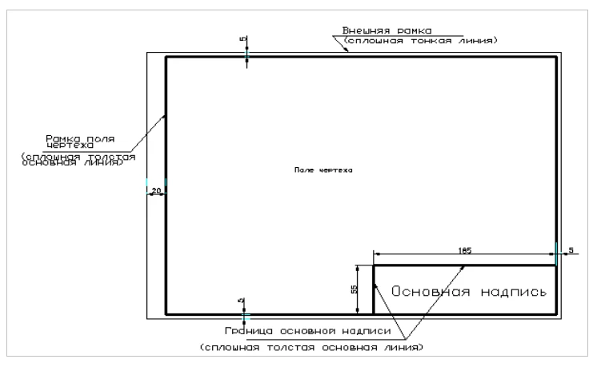
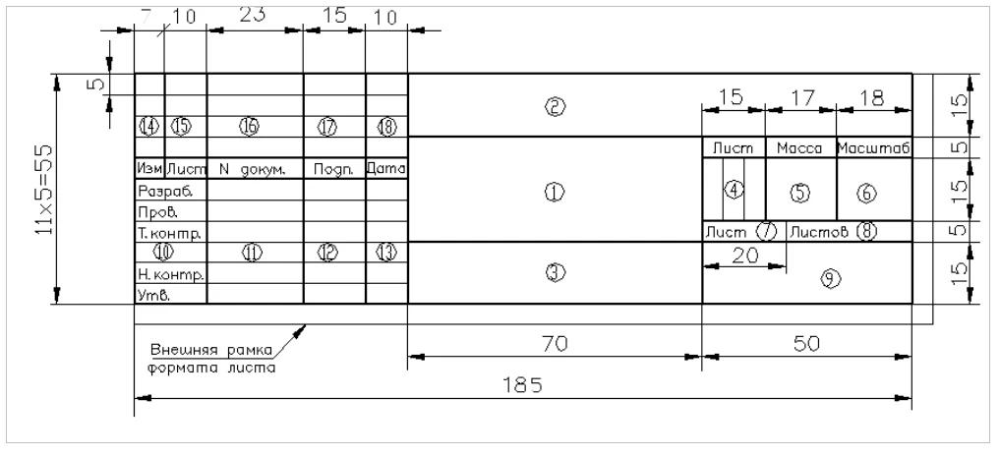
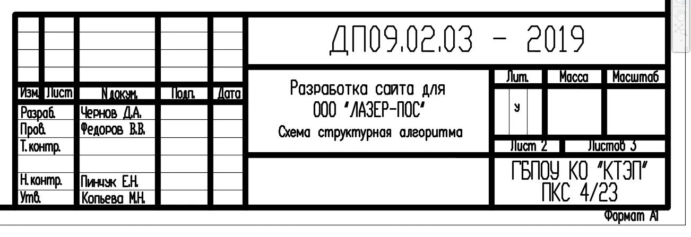
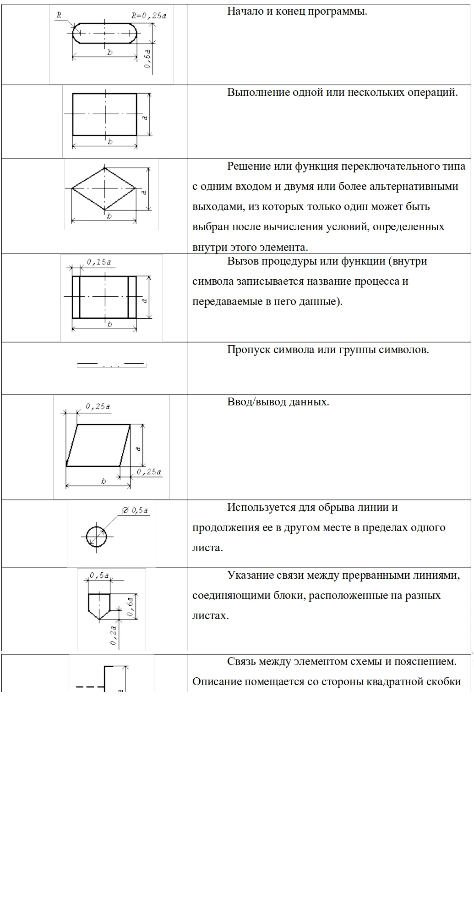
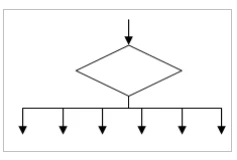

Графическая часть ДП. Общие положения
При выполнении чертежей и других конструкторских документов используют стандарты, позволяющие грамотно их оформить и однозначно читать. Эти стандарты объединены в комплекс документов под общим названием «Единая система конструкторской документации» (ЕСКД).
Единая система конструкторской документации — комплекс стандартов, устанавливающих взаимосвязанные нормы и правила по разработке, оформлению и обращению конструкторской документации (расчетов, схем, чертежей), разрабатываемой и применяемой на всех стадиях жизненного цикла изделия (при проектировании, изготовлении, эксплуатации, ремонте и др.).
К конструкторским документам относят графические и текстовые документы, которые в отдельности или в совокупности определяют состав и устройство изделия и содержат необходимые данные для его разработки или изготовления, приемки, эксплуатации и ремонта.
Стандарты периодически уточняются и изменяются, что необходимо учитывать при их использовании.
Графическая часть ДП выполняется на листах бумаги формата А1, размеры которого установлены ГОСТ 2.301-68 и составляют 594×841 мм.
Формат листа определяется размерами внешней рамки, выполненной тонкой линией, по которой производится его обрезка.
Формат листа
Основная надпись
Для всех чертежей и схем ГОСТ 2.104-68* устанавливает единую форму, размеры и порядок оформления основной надписи, которую располагают в правом нижнем углу вплотную к рамке.
На листах больших форматов основную надпись можно располагать как вдоль короткой, так и вдоль длинной сторон.
Основная надпись
Указания к заполнению основной надписи
В графе 1 указывают тему дипломного проекта. Шрифт основной с наклоном 75о к основанию строки. Допускается использовать шрифт без наклона (90о к основанию строки). Размер шрифта 5 или 7 (в зависимости от объема записываемого текста) по ГОСТ 2.304-68.
Под темой ДП записывается наименование документа (например, Схема структурная алгоритма, Структура программного продукта).
В графе 2 - обозначение документа выполняется основным шрифтом, размер 7 или 10, буквы прописные по ГОСТ 2.304-68.
В графе 4 – литера документа: У;
В графе 7 – порядковый номер листа.
В графе 8 – общее количество листов графической части дипломного проекта.
В графе 9 – название образовательного учреждения, номер учебной группы, шрифт основной с наклоном (допускается шрифт без наклона), размер 5 по ГОСТ 2.304-68. Например, КТЭП ПКС 4/25 (или КТЭП ПКС 4/25).
В графе 10 – характер работы, выполняемый лицом, подписывающим документ (разработал, руководитель, консультант).
В графе 11 – фамилии лиц, подписавших документ. Против графы «Н.контр.» указать фамилию консультанта по графической части.
В графе 12 – подписи лиц, фамилии которых указаны в графе 11.
В графе 13 – дата подписания документа.
Пример основной надписи
Правила графического оформления схем
Схема – это графический конструкторский документ, на котором показаны в виде условных изображений или обозначений составные части продукта и связи между ними.
Схемы входят в комплект конструкторской документации и содержат вместе с другими документами необходимые данные для проектирования, разработки ПП.
Структурная схема отображает принцип работы в самом общем виде. На схеме изображают все основные функциональные части, а также основные взаимосвязи между ними. Направление хода процессов обозначают стрелками на линиях взаимосвязи.
Высота шрифта и размер блоков выбирается по самому информационно нагруженному блоку. Наименование блока вписывается без переноса и форматируется по центру.
Толщина линий сторон блоков и линий связи одинаковая, равная толщине сплошной основной толстой линии. Изломы линий связи выполняются под углом 90°.
Линии на схемах всех типов выполняют в соответствии с правилами, установленными ГОСТ 2.701-84 и ГОСТ 2.721-74.
Линии связи должны состоять из горизонтальных или вертикальных отрезков и иметь минимальное количество изломов и взаимных пересечений.
Схема структурная алгоритма работы программы
Схемы структурные алгоритмов оформляются строго в соответствии с ГОСТ 19.701-90 (ИСО 5807-85) ЕСПД - Схемы алгоритмов, программ, данных и систем.
Таблица Основные элементы схем алгоритма
Несколько выходов из символа решения следует показывать следующим способом.
Структура Выбор
Размер а должен выбираться из ряда 10, 15, 20 мм. Допускается увеличивать размер а на число, кратное 5. Размер b равен 1,5a.
Примеры графических листов:
{kind=link}
{kind=link}
{kind=link}